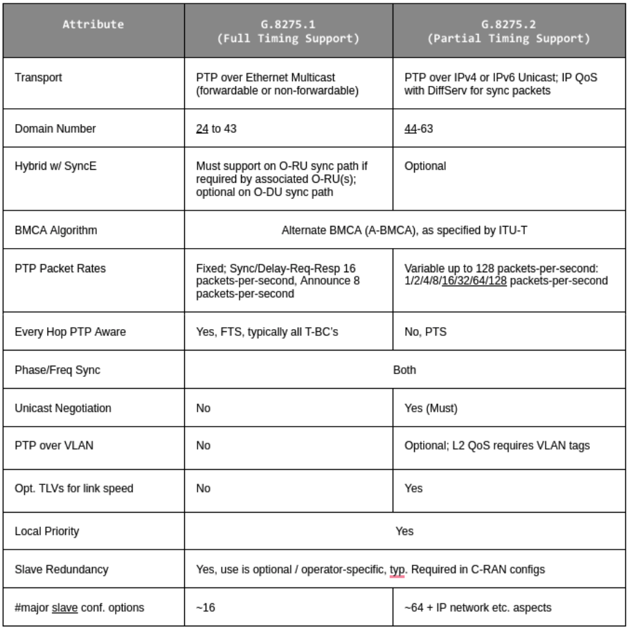
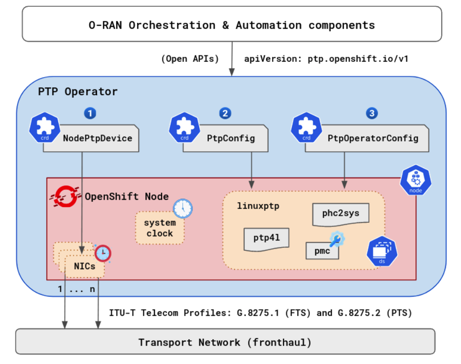
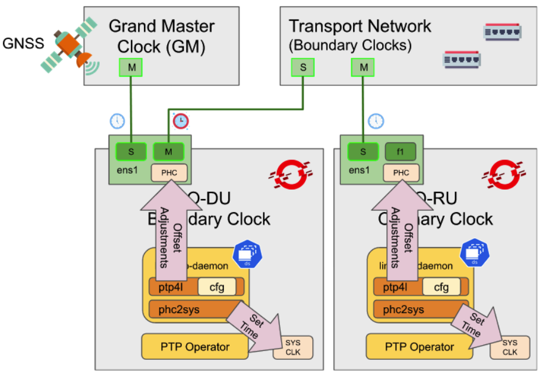
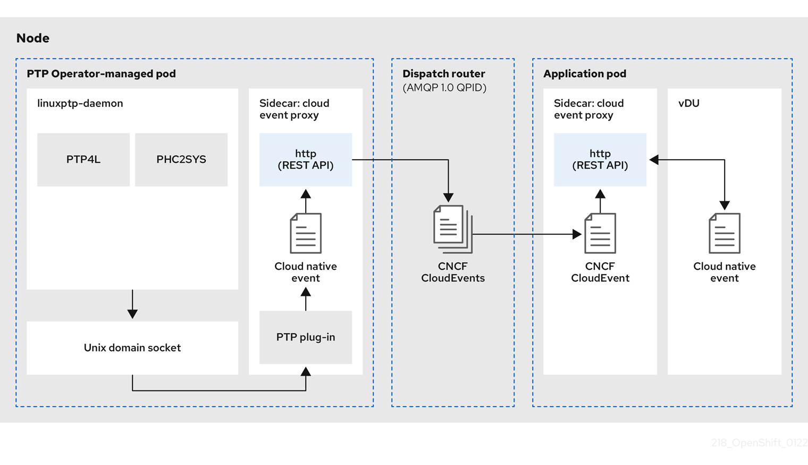

1. Refactoring software as cloud-native network functions
Software down into the smallest set of microservices as possible.
It is hard to move a 1000LB boulder. However, it is easy when that boulder is broken down into many pieces. All containerized network functions (CNFs) should break apart each piece of the functions/services/processes into separate containers. These containers will still be within kubernetes pods and all of the functions that perform a single task should be within the same namespace.
There is a quote from Lewis and Fowler that describes this best:
The microservice architectural style is an approach to developing a single application as a suite of small services, each running in its own process and communicating with lightweight mechanisms, often an HTTP resource API.These services are built around business capabilities and independently deployable by fully automated deployment machinery.
1.1. Pods
Pods are the smallest deployable units of computing that can be created and managed in Kubernetes.
A Pod can contain one or more running containers at a time. Containers running in the same Pod have access to several of the same Linux namespaces. For example, each application has access to the same network namespace, meaning that one running container can communicate with another running container over 127.0.0.1:<port>. The same is true for storage volumes so all containers are in the same Pod have access to the same mount namespace and can mount the same volumes.
2. CNF expectations and permissions
2.1. High-level CNF expectations
-
CNFs shall be built to be cloud-native
-
Containers MUST NOT run as root (uid=0). See test case access-control-security-context-non-root-user-check
-
Containers MUST run with the minimal set of permissions required. Avoid Privileged Pods. See test case access-control-security-context-privilege-escalation
-
Use the main CNI for all traffic - MULTUS/SRIOV/MacVLAN are for corner cases only (extreme throughput requirements, protocols that are unable to be load balanced)
-
CNFs should employ N+k redundancy models (not applicable for Far Edge)
-
CNFs MUST define their pod affinity/anti-affinity rules. See test cases lifecycle-affinity-required-pods, lifecycle-pod-high-availability
-
All secondary network interfaces employed by CNFs with the use of MULTUS MUST support Dual-Stack IPv4/IPv6.
-
Instantiation of CNF (via Helm chart or Operators or otherwise) shall result in a fully-functional CNF ready to serve traffic, without requiring any post-instantiation configuration of system parameters
-
CNFs shall implement service resilience at the application layer and not rely on individual compute availability/stability
-
CNFs shall decouple application configuration from Pods, to allow dynamic configuration updates
-
CNFs shall support elasticity with dynamic scale up/down using kubernetes-native constructs such as ReplicaSets, etc. See test cases lifecycle-crd-scaling, lifecycle-statefulset-scaling, lifecycle-deployment-scaling
-
CNFs shall support canary upgrades
-
CNFs shall self-recover from common failures like pod failure, host failure, and network failure. Kubernetes native mechanisms such as health-checks (Liveness, Readiness and Startup Probes) shall be employed at a minimum. See test cases lifecycle-liveness-probe, lifecycle-readiness-probe, lifecycle-startup-probe
|
CNF requirement
Containers must not run as root See test case access-control-security-context-non-root-user-check |
|
CNF requirement
All secondary interfaces (MULTUS) must support dual stack |
|
CNF requirement
CNFs shall not use node selectors nor taints/tolerations to assign pod location See test cases lifecycle-pod-scheduling, platform-alteration-tainted-node-kernel |
2.2. CNF restrictions
-
CNFs may not use host networking
-
Namespace should not be created by the CNFs deployment method (Helm / Operator)
-
CNFs may not perform Role creation
-
CNFs may not perform Rolebinding creation
-
CNFs may not have Cluster Roles
-
CNFs are not authorized to bring their own CNI
-
CNFs may not deploy Daemonsets
3. CNF developer guide
This section discusses recommendations and requirements for CNF application builders.
3.1. Cloud-native design best practices
The following best practices highlight some key principles of cloud-native application design.
- Single purpose w/messaging interface
-
A container should address a single purpose with a well-defined (typically RESTful API) messaging interface. The motivation here is that such a container image is more reusable and more replaceable/upgradeable.
- High observability
-
A container must provide APIs for the platform to observe the container health and act accordingly. These APIs include health checks (liveness and readiness), logging to stderr and stdout for log aggregation (by tools such as
LogstashorFilebeat), and integrate with tracing and metrics-gathering libraries (such asPrometheusorMetricbeat). - Lifecycle conformance
-
A container must receive important events from the platform and conform/react to these events properly. For example, a container should catch SIGTERM or SIGKILL from the platform and shut down as quickly as possible. Other typically important events from the platform are PostStart to initialize before servicing requests and PreStop to release resources cleanly before shutting down.
See test cases lifecycle-container-shutdown, lifecycle-container-startup
- Image immutability
-
Container images are meant to be immutable; i.e. customized images for different environments should typically not be built. Instead, an external means for storing and retrieving configurations that vary across environments for the container should be used. Additionally, the container image should NOT dynamically install additional packages at runtime.
- Process disposability
-
Containers should be as ephemeral as possible and ready to be replaced by another container instance at any point in time. There are many reasons to replace a container, such as failing a health check, scaling down the application, migrating the containers to a different host, platform resource starvation, or another issue.
This means that containerized applications must keep their state externalized or distributed and redundant. To store files or block level data, persistent volume claims should be used. For information such as user sessions, use of an external, low-latency, key-value store such as redis should be used. Process disposability also requires that the application should be quick in starting up and shutting down, and even be ready for a sudden, complete hardware failure.
Another helpful practice in implementing this principle is to create small containers. Containers in cloud-native environments may be automatically scheduled and started on different hosts. Having smaller containers leads to quicker start-up times because before being restarted, containers need to be physically copied to the host system.
A corollary of this practice is to "retry instead of crashing", for example, When one service in your application depends on another service, it should not crash when the other service is unreachable. For example, your API service is starting up and detects the database is unreachable. Instead of failing and refusing to start, you design it to retry the connection. While the database connection is down the API can respond with a 503 status code, telling the clients that the service is currently unavailable. This practice should already be followed by applications, but if you are working in a containerized environment where instances are disposable, then the need for it becomes more obvious.
Also related to this, by default containers are launched with shared images using COW filesystems which only exist as long as the container exists. Mounting Persistent Volume Claims enables a container to have persistent physical storage. Clearly defining the abstraction for what storage is persisted promotes the idea that instances are disposable.
- Horizontal scaling and redundancy
-
Support scaling and/or redundancy of your application through increasing/decreasing the number of application pods in your deployment, rather than requiring increased/decreased resources for a single application pod.
Also follow the principles described in Process Disposability, i.e. stateless containers with quick startup and teardown times.
- Self-containment
-
A container should contain everything it needs at build time. The container should rely only on the presence of the Linux kernel and have any additional libraries added into it at the time the container is built. The container image should NOT dynamically install additional packages at runtime.
The only exceptions are things such as configurations, which vary between different environments and must be provided at runtime; for example, through Kubernetes ConfigMap
- Runtime confinement
-
A container declares its resource requirements (cpu, memory, networking, disk) to the platform. The container must stay confined to the indicated resource requirements.
- Use small container images
-
Use the smallest base image possible. To reduce the size of your image, install only what is strictly needed inside it. Clean up temporary files and avoid the installation of unnecessary packages. This reduces container size, build time, and networking time when copying container images. Layer squashing may also be leveraged to hide secrets.
- Layer the application
-
Package a single app per container. Do not replace VM’s with containers. Try to create images with common layers. After the initial download, only the layers that make each image unique are needed, thereby reducing the overhead on downloads.
- Image tagging
-
Never build off the latest tag—this prevents builds from being reproducible over time. Properly tag your images. Tagging the image lets users identify a specific version of your software in order to download it. For this reason, tightly link the tagging system on container images to the release policy of your software.
3.2. Container development best practices
3.2.1. Pod exit status
The most basic requirement for the lifecycle management of pods in OpenShift is the ability to start and stop correctly. When starting up, health probes like liveness and readiness checks can be put into place to ensure the application is functioning properly.
There are different ways a pod can be stopped in Kubernetes. One way is that the pod can remain alive but non-functional. Another way is that the pod can crash and become non-functional. In the first case, if the administrator has implemented liveness and readiness checks, OpenShift can stop the pod and either restart it on the same node or a different node in the cluster. For the second case, when the application in the pod stops, it should exit with a code and write suitable log entries to help the administrator diagnose what the issue was that caused the problem.
Pods should use terminationMessagePolicy: FallbackToLogsOnError to summarize why they crashed and use stderr to report errors on crash
See test case observability-termination-policy
|
CNF requirement
All pods shall have a liveness, readiness and startup probes defined See test cases lifecycle-liveness-probe, lifecycle-readiness-probe, lifecycle-startup-probe |
OpenShift Container Platform and Kubernetes give application instances time to shut down before removing them from load balancing rotations. However, applications must ensure they cleanly terminate user connections as well before they exit.
On shutdown, OpenShift Container Platform sends a TERM signal to the processes in the container. Application code, on receiving SIGTERM, stop accepting new connections. This ensures that load balancers route traffic to other active instances. The application code then waits until all open connections are closed, or gracefully terminate individual connections at the next opportunity, before exiting.
After the graceful termination period expires, a process that has not exited is sent the KILL signal,
which immediately ends the process. The terminationGracePeriodSeconds attribute of a pod or pod
template controls the graceful termination period (default 30 seconds) and can be customized per
application as necessary.
3.2.2. Graceful termination
There are different reasons that a pod may need to shutdown on an OpenShift cluster. It might be that the node the pod is running on needs to be shut down for maintenance, or the administrator is doing a rolling update of an application to a new version which requires that the old versions are shutdown properly.
When pods are shut down by the platform they are sent a SIGTERM signal which means that the process in the container should start shutting down, closing connections and stopping all activity. If the pod doesn’t shut down within the default 30 seconds then the platform may send a SIGKILL signal which will stop the pod immediately. This method isn’t as clean and the default time between the SIGTERM and SIGKILL messages can be modified based on the requirements of the application.
Pods should exit with zero exit codes when they are gracefully terminated.
|
CNF requirement
All pods must respond to SIGTERM signal and shutdown gracefully with a zero exit code. See test case lifecycle-container-shutdown |
3.2.3. Pod resource requests
CaaS Platform has a default scheduler that is responsible for being aware of the current available resources on the platform, and placing containers / applications on the platform appropriately.
All pods should have a resource request that is the minimum amount of resources the pod is expected to use at steady state for both memory and CPU.
3.2.4. Storage: emptyDir
There are several options for volumes and reading and writing files in OpenShift. When the requirement is temporary storage and given the option to write files into directories in containers versus an external filesystems, choose the emptyDir option. This will provide the administrator with the same temporary filesystem - when the pod is stopped the dir is deleted forever. Also, the emptyDir can be backed by whatever medium is backing the node, or it can be set to memory for faster reads and writes.
Using emptyDir with requested local storage limits instead of writing to the container directories also allows enabling readonlyRootFilesystem on the container or pod.
3.2.5. Liveness readiness and startup probes
As part of the pod lifecycle, the OpenShift platform needs to know what state the pod is in at all times. This can be accomplished with different health checks. There are at least three states that are important to the platform: startup, running, shutdown. Applications can also be running, but not healthy, meaning, the pod is up and the application shows no errors, but it cannot serve any requests.
When an application starts up on OpenShift it may take a while for the application to become ready to accept connections from clients, or perform whatever duty it is intended for.
Two health checks that are required to monitor the status of the applications are liveness and readiness. As mentioned above, the application can be running but not actually able to serve requests. This can be detected with liveness checks. The liveness check will send specific requests to the application that, if satisfied, indicate that the pod is in a healthy state and operating within the required parameters that the administrator has set. A failed liveness check will result in the container being restarted.
There is also a consideration of pod startup. Here the pod may start and take a while for different reasons. Pods can be marked as ready if they pass the readiness check. The readiness check determines that the pod has started properly and is able to answer requests. There are circumstances where both checks are used to monitor the applications in the pods. A failed readiness check results in the container being taken out of the available service endpoints. An example of this being relevant is when the pod was under heavy load, failed the readiness check, gets taken out of the endpoint pool, processes requests, passes the readiness check and is added back to the endpoint pool.
For more information, see Configure Liveness, Readiness and Startup Probes.
|
Exec probes need to be avoided at all cost because of the resource overhead the require. Exec probes cannot be used on RT containers. |
See test cases lifecycle-liveness-probe, lifecycle-readiness-probe, lifecycle-startup-probe
|
If the CNF is doing CPU pinning and running a DPDK process do not use exec probes (executing a command within the container); as this can pile up and eventually block the node. See test case networking-dpdk-cpu-pinning-exec-probe |
3.2.6. Use imagePullPolicy: IfNotPresent
If there is a situation where the container dies and needs to be restarted, the image pull policy becomes important. There are three image pull policies available: Always, Never and IfNotPresent. It is generally recommended to have a pull policy of IfNotPresent. This means that the if pod needs to restart for any reason, the kubelet will check on the node where the pod is starting and reuse the already downloaded container image if it’s available. OpenShift intentionally does not set AlwaysPullImages as turning on this admission plugin can introduce new kinds of cluster failure modes. Self-hosted infrastructure components are still pods: enabling this feature can result in cases where a loss of contact to an image registry can cause redeployment of an infrastructure or application pod to fail. We use PullIfNotPresent so that a loss of image registry access does not prevent the pod from restarting.
|
Container images that are protected by registry authentication have a condition whereby a user who is unable to download an image directly can still launch it by leveraging the host’s cached image. |
See test case lifecycle-image-pull-policy
3.2.7. No naked pods
Do not use naked Pods (that is, Pods not bound to a ReplicaSet, or StatefulSet deployment). Naked pods will not be rescheduled in the event of a node failure.
See test case lifecycle-pod-owner-type
CNF requirement
|
Applications must not depend on any single pod being online for their application to function. |
|
CNF requirement
Pods must be deployed as part of a See test case lifecycle-pod-owner-type |
|
CNF requirement
Pods may not be deployed in a DaemonSet. See test case lifecycle-pod-owner-type |
3.2.8. init containers
init containers can be used for running tools or commands or any other action that needs to be done before the actual pod is started. For example, loading a database schema, or constructing a config file from a definition passed in via ConfigMap or Secret.
See Using init containers to perform tasks before a pod is deployed for more information.
3.2.9. Container security best practices
3.2.9.1. Avoid privileged containers
In OpenShift Container Platform, it is possible to run privileged containers that have all of the root capabilities on a host machine, allowing the ability to access resources which are not accessible in ordinary containers. This, however, increases the security risk to the whole cluster. Containers should only request those privileges they need to run their legitimate functions. No containers will be allowed to run with full privileges without an exception.
The general guidelines are:
-
Only ask for the necessary privileges and access control settings for your application.
-
If the function required by your CNF can be fulfilled by OCP components, your application should not be requesting escalated privilege to perform this function.
-
Avoid using any host system resource if possible.
-
Leveraging read only root filesystem when possible.
3.2.10. Avoid accessing resource on host
It is not recommended for an application to access following resources on the host.
3.2.11. Avoid mounting host directories as volumes
It is not necessary to mount host /sys/ or host /dev/ directories as a volume in a pod in order to use a network device such as SR-IOV VF. The moving of a network interface into the pod network namespace is done automatically by CNI. Mounting the whole /sys/ or /dev/ directory in the container will overwrite the network device descriptor inside the container which causes device not found or no such file or directory error.
Network interface statistics can be queried inside the container using the same /sys/ path as was done when running directly on the host. When running network interfaces in containers, relevant /sys/ statistics interfaces are available inside the container, such as /sys/class/net/net1/statistics/, /proc/net/tcp and /proc/net/tcp6.
For running DPDK applications with SR-IOV VF, device specs (in case of vfio-pci) are automatically attached to the container via the Device Plugin. There is no need to mount the /dev/ directory as a volume in the container as the application can find device specs under /dev/vfio/ in the container.
3.2.12. Avoid the host network namespace
Application pods must avoid using hostNetwork. Applications may not use the host network, including nodePort, for network communication. Any networking needs beyond the functions provided by the pod network and ingress/egress proxy must be serviced via a MULTUS connected interface.
|
CNF requirement
Applications may not use See test case access-control-service-type |
3.2.13. Use of Capabilities
Linux Capabilities allow you to break apart the power of root into smaller groups of privileges. Platform administrators can use Pod Security Policy (PSP) to control permissions for pods. Users can also specify the necessary Security Context in the pod annotations.
- IPC_LOCK
-
IPC_LOCK capability is required if any of these functions are used in an application:
-
mlock() -
mlockall() -
shmctl() -
mmap()
-
Even though ‘mlock’ is not necessary on systems where page swap is disabled, it may still be required as it is a function that is built into DPDK libraries, and DPDK based applications may indirectly call it by calling other functions.
- NET_ADMIN
-
NET_ADMIN capability is required to perform various network related administrative operations inside container such as:
-
MTU setting
-
Link state modification
-
MAC/IP address assignment
-
IP address flushing
-
Route insertion/deletion/replacement
-
Control network driver and hardware settings via ‘ethtool’
-
This doesn’t include:
-
adding or deleting a virtual interface inside a container. For example: adding a VLAN interface
-
Setting VF device properties
All the administrative operations (except ethtool) mentioned above that require the NET_ADMIN capability should already be supported on the host by various CNIs on CaaS Platform.
- Avoid SYS_ADMIN
-
This capability is very powerful and overloaded. It allows the application to perform a range of system administration operations to the host. So you should avoid requiring this capability in your application.
- SYS_NICE
-
In the case that a CNF is using the real-time kernel. SYS_NICE is needed to allow DPDK application to switch to SCHED_FIFO
- SYS_PTRACE
-
This capability is required when using Process Namespace Sharing. This is used when processes from one Container need to be exposed to another Container. For example, to send signals like
SIGHUPfrom a process in a Container to another process in another Container.
3.3. Logging
- Log aggregation and analysis
-
Containers are expected to write logs to stdout. It is highly recommended that stdout/stderr leverage some standard logging format for output.
-
Logs CAN be parsed to a limited extent so that specific vendor logs can be sent back to the CNF if required.
-
Logs need to be properly labeled for logs’ consumer to correlate and process
-
CNFs requiring log parsing must leverage some standard logging library or format for all stdout/stderr. Examples of standard logging libraries include;
klog,rfc5424, andoslo.
See test case observability-container-logging
3.4. Upgrade expectations
-
The Kubernetes API deprecation policy defined in Kubernetes Deprecation Policy shall be followed.
-
CNFs are expected to maintain service continuity during platform upgrades, and during CNF version upgrades
-
CNFs need to be prepared for nodes to reboot or shut down without notice
-
CNFs shall configure pod disruption budget appropriately to maintain service continuity during platform upgrades
-
Applications may NOT deploy pod disruption budgets that prevent zero pod disruption.
-
Applications should not be tied to a specific version of Kubernetes or any of its components
|
Applications MUST specify a pod disruption budget appropriately to maintain service continuity during platform upgrades. The budget should be defined with a balance such that it allows operational flexibility for the cluster to drain nodes, but restrictive enough so that the service is not degraded over upgrades. See test case lifecycle-pod-recreation |
|
CNF requirement
Pods that perform the same microservice and that could be disrupted if multiple members of the service are unavailable must implement pod disruption budgets to prevent disruption in the event of patches/upgrades. See test case observability-pod-disruption-budget |
3.5. Taints and tolerations
Taints and tolerations allow the node to control which pods are scheduled on the node. A taint allows a node to refuse a pod to be scheduled unless that pod has a matching toleration.
You apply taints to a node through the node specification (NodeSpec) and apply tolerations to a pod through the pod specification (PodSpec). A taint on a node instructs the node to repel all pods that do not tolerate the taint.
Taints and tolerations consist of a key, value, and effect. An operator allows you to leave one of these parameters empty.
See Controlling pod placement using node taints for more information.
See test case platform-alteration-tainted-node-kernel
3.6. Requests/Limits
Requests and limits provide a way for a CNF developer to ensure they have adequate resources available to run the application. Requests can be made for storage, memory, CPU and so on. These requests and limits can be enforced by quotas. Quotas can be used as a way to enforce requests and limits. See Resource quotas per project for more information.
Nodes can be overcommitted which can affect the strategy of request/limit implementation. For example, when you need guaranteed capacity, use quotas to enforce. In a development environment, you can overcommit where a trade-off of guaranteed performance for capacity is acceptable. Overcommitment can be done on a project, node or cluster level.
See Configuring your cluster to place pods on overcommitted nodes for more information.
|
CNF requirement
Pods must define requests and limits values for CPU and memory. See test case access-control-requests-and-limits |
3.7. Security and role-based access control
- Roles / RoleBindings
-
A
Rolerepresents a set of permissions within a particular namespace. E.g: A given user can list pods/services within the namespace. TheRoleBindingis used for granting the permissions defined in a role to a user or group of users. Applications may create roles and rolebindings within their namespace, however the scope of a role will be limited to the same permissions that the creator has or less.
See test case access-control-pod-role-bindings
- ClusterRole / ClusterRoleBinding
-
A
ClusterRolerepresents a set of permissions at the cluster level that can be used by multiple namespaces. TheClusterRoleBindingis used for granting the permissions defined in aClusterRoleto a user or group of users at a namespace level. Applications are not permitted to install cluster roles or create cluster role bindings. This is an administrative activity done by cluster administrators. CNFs should not use cluster roles; exceptions can be granted to allow this, however this is discouraged. It is recommended to define a set of allowed roles and allow binding to these only. Avoid using cluster roles for CNFs, instead use Roles local to the namespace where the CNF is deployed.
See Using RBAC to define and apply permissions for more information.
|
CNF requirement
CNFs may not create See test case access-control-cluster-role-bindings |
3.8. MULTUS
MULTUS is a meta-CNI that allows multiple CNIs that it delegates to. This allows pods to get additional interfaces beyond eth0 via additional CNIs. Having additional CNIs for SR-IOV and MacVLAN interfaces allow for direct routing of traffic to a pod without using the pod network via additional interfaces. This capability is being delivered for use in only corner case scenarios, it is not to be used in general for all applications. Example use cases include bandwidth requirements that necessitate SR-IOV and protocols that are unable to be supported by the load balancer. The OVN based pod network should be used for every interface that can be supported from a technical standpoint.
|
CNF requirement
Unless an application has a special traffic requirement that is not supported by SPK or ovn-kubernetes CNI the applications must use the pod network for traffic |
See Understanding multiple networks for more information.
3.9. Labels
Labels are used to organize and select subsets of objects. For example, labels enable a service to find and direct traffic to an appropriate pod. While pods can come and go, when labeled appropriately, the service will detect new pods, or a lack of pods, and forward or reduce the traffic accordingly.
When designing your label scheme, it might make sense to map applications as types, location, departments, roles, etc. The scheduler will then use these attributes when colocating pods or spreading the pods out amongst the cluster. It is also possible to search for resources by label.
4. Far Edge specific CNF requirements
Due to the specific deployment environment at the very far edge of the network, and the different CaaS/PaaS vendors being selected by Far Edge vs. Core/Edge, there are some Far Edge specific CNF requirements that are described in the following sections.
At the Far Edge, OpenShift is deployed as a Single Node OpenShift (SNO) cluster.
4.1. RT requirements and CPU engineering
In regards to CPU engineering and layout, the platform infrastructure Pods and operating system processes will require CPU resources in addition to workload requirements. To facilitate these requirements workload partitioning and performance profiles are used in tandem to accommodate this. The workload partitioning should be set up during the installation of the SNO cluster. An example cluster manifest is here.
Provided that these manifests are created at runtime, the machineConfig can be changed to modify the number of cores allocated to the house keeping pods and processes. Additionally, these partition manifests must correspond to the same configuration as the performance profile..
This configuration can be verified by examining the allowed CPUs for systemd:
# cat /proc/1/status|grep Cpus_allowed_list
Cpus_allowed_list: 0-1,32-33Housekeeping pods should have the following annotation in their namespace:
annotations:
workload.openshift.io/allowed: managementThis ensures they are given access to the same cores as above. More information can be found in the workload partitioning documentation.
The platform provides the different types of CPU pools to the various application threads. The low-latency application, like vRAN, should be designed and implemented properly to fully utilize this platform. More information can be found in the Low latency tuning documentation.
4.2. CPU
4.2.1. Application shared CPU
The burstable workload can float around on the CPUs depending on the availability of resources. More information can be found in the Low latency tuning documentation.
The Workload that is not sensitive to CPU migration and context switching, e.g. OAM, is suitable for using the shared CPU pool. For more information see the Kubernetes Pod QoS class docs.
CPU resource request example:
resources:
# Container is in the application shared CPU pool
requests:
# CPU request is not an integer
cpu: 100m
limits:
cpu: 200m4.2.2. Application exclusive CPU pool
CPUsets constrain the CPU and memory placement of task to the resources within a task’s current cpuset. Within cgroup, the workload can set CPU affinity to reduce the context switching, however CPU scheduler still performs load balances for non-cpu-pinned workload across all the CPUs in the cpuset. In addition, the following annotation is required to accompany the workload. See Disabling CPU CFS quota:
apiVersion: performance.openshift.io/v2
kind: Pod
metadata:
annotations:
cpu-quota.crio.io: "disable"
spec:
runtimeClassName: performance-<profile_name>A workload should use Application exclusive CPU pool if it has CPU low-latency requirement. However, the workload should allow context switching with other application threads and kernel threads in the cpuset. An example workload that uses application exclusive pool is a vRAN RT task.
CPU resource request example:
resources:
# Container is in the application exclusive CPU pool
requests:
# CPU request is an integer and matches with limits
cpu: 2
limits:
cpu: 24.2.3. Guidelines for the applications to use CPU pools
-
100% busy tight loop polling threads with the setting of RT CPU schedule scheduling policy (for example, polling threads less than
SCHED_FIFO:10/SCHED_RR) need to implementuSleepsto yield CPU time to other processes or threads.-
Sleep duration and periodicity need to be configurable parameters
-
As one of RT-Application on-boarding acceptance criteria, Sleep duration and periodicity will be configured properly to ensure that CaaS platform does not run into stability issues (for example, CPU starvation, process stall).
-
-
A cloud native application should be decoupled into multiple small units (for example, a container) to ensure that each unit is running in only one type of CPU pool.
-
If one of the containers in the pod uses guaranteed cpus then all other containers in that pod must be guaranteed
qosclass as well. -
The requirement is that the sum of all resources and limits must be equal (Pod QoS Guaranteed) and the pinned containers must use integer (and equal) values for cpu and memory requests and limits. This implies that the non-pinned containers also use requests=limits, but the values can be fractional "2.5" or even whole, but written as fractions eg. "1.0".
-
At least one core must be left for non-guaranteed work loads.
-
-
The workload running in the shared CPU pool should choose non-RT CPU schedule policy, like SCHED_OTHER to always share the CPU with other applications and kernel threads.
-
The workload running in Application exclusive CPU pool should choose RT CPU scheduling policy, like
SCHED_FIFO/SCHED_RRto archive the low-latency, but should set the priority less than 10 to avoid the CPU starvation of the kernel threads (ksoftirqd SCHED_FIFO:11, ktimer SCHED_FIFO:11, rcuc SCHED_FIFO:11) on the same CPU core. -
The workload running in Application-isolated exclusive CPU pool should choose RT CPU scheduling policy, like
SCHED_FIFO/SCHED_RRand set high priority to achieve the best low-latency performance. The workload should be cpu-pinned on a set of dedicated CPU cores, but periodically yielding CPU (calling thenanosleepfunction) in its busy tight loop is required to ensure that the kernel threads on the same CPU core can get the minimum CPU time. -
If a workload with both RT task and non-RT task has to be implemented in one single Pod:
-
The real-time tasks within the Pod:
-
Should execute the CPU pinning based on the rule of single thread per logical core
-
Should use RT CPU scheduling policy, like
SCHED_FIFO/SCHED_RR -
Can set higher priority, but periodically yielding CPU in its busy tight loop is required (refer to the earlier uSleep requirements).
-
-
-
The non real time tasks within the Pod:
-
Should use the CPU cores separated from real time tasks using taskset or pthread_affinity
-
Need to take care of the scheduling/load balancing if the
SCHED_OTHERscheduling policy is used -
Use RT CPU scheduling policy, like SCHED_RR, with lower priority levels, which will be equivalent to SMP configuration of threads running on not-isolcpu cores.
-
The above applies for guaranteed and non-guaranteed QoS within a single Pod.
It is possible to create a Pod with multiple containers and only pin some of the CPUs.
Follow these rules:
-
Total resource requests must match total limits
-
Pinned containers must request integer number of CPUs
apiVersion: v1
kind: Pod # QoS: Guaranteed
metadata: # total requests [id="cnf-best-practices-far-edge-limits"]
= limits
name: guar-2s
spec:
containers:
- name: pinned-1 # PINNED
resources:
limits: # requests are inferred
cpu: 2 # integer value
memory: "400Mi"
- name: best-1
resources:
limits: # Burstable
cpu: 0.5 # non-integer value
memory: "200Mi"
- name: best-2
resources:
limits: # Burstable
cpu: 1.0 # non-integer value
memory: "200Mi"-
CNF applications should build resiliency in their pipeline to recover from unexpected outliers in the platform. Applications need to recover without causing the system or application to crash when an outlier is seen (e.g. symbol or TTI dropped).
4.3. Huge pages allocation
Unlike CPU or memory, huge pages do not support overcommit. Huge page requests must equal the limits. Huge pages are isolated at a container scope, so each container has its own limit on their cgroup sandbox as requested in a container spec. Applications that consume huge pages via shmget() with SHM_HUGETLB must run with a supplemental group that matches /proc/sys/vm/hugetlb_shm_group. Huge page usage in a namespace is controllable via ResourceQuota similar to other compute resources like cpu or memory using the hugepages-1Gi token.
Please refer to Manage HugePages for more information.
4.5. PTP synchronization
Network synchronization is key to optimal radio network performance. While there is no change to fundamental synchronization requirements in the move from 4G to 5G, wider use of Time Division Duplex (TDD) radio technology and growing demand for new network architectures that support demanding 5G use cases have made the need for time synchronization more critical in 5G.
Precision Timing Protocol (PTP) is used as Transport-based synchronization solutions to provide accurate timing to both platform and application. A hierarchical PTP master-slave architecture is implemented for clock distribution.
The IEEE 1588 PTP standards provide a wealth of options and the basis for highly reliable and accurate time synchronization solutions. However, the time synchronization needs of specific applications in different industries can vary quite significantly. These specific needs are defined in separate PTP profile standards, often in collaboration with other industry standards organizations.
For 5G, both IEEE and ITU-T provide relevant profiles that can be used to design ultra-reliable and highly accurate time synchronization solutions. The ITU-T PTP Telecom Profiles are:
-
G8265.1 was first used to deliver accurate frequency synchronization, but not time::synchronization, to mobile base-stations (as the delay asymmetries and packet delay variation present in PTP-unaware networks would make it impossible to meet the stringent accuracy and stability requirements).
-
G8275.1 is designed to deliver both highly accurate frequency synchronization,::phase synchronization and Time of Day (ToD) with support for accurate frequency synchronization from the network physical layer. (Recommended one but all elements in the network must be PTP-aware).
-
G8275.2 is designed to deliver accurate frequency synchronization, phase synchronization and ToD with only partial support from the network where non-PTP nodes are also in the network path.
The following table shows the relevant options in Telecom profiles:

Typically, a PTP hierarchy has the following high-level components:
- Grandmaster (GM) clock
-
This is the primary reference time clock (PRTC) for the entire PTP::network. It usually synchronizes its clock from an external Global Navigation Satellite System (GNSS) source.
- Boundary clock (BC)
-
This intermediate device has multiple PTP-capable network connections to::synchronize one network segment to another accurately. It synchronizes its clock to a master and serves as a time source for ordinary clocks.
- Ordinary clock (OC)
-
In contrast to boundary clocks, this device only has a single PTP-capable network connection. Its main function is to synchronize its clock to a master, and in the event of losing the master, it can tolerate a loss of sync source for some period of time.
OpenShift Container Platform uses the PTP Operator to deploy PTP profiles (through the PTPConfig CR) along with the linuxptp Pod in each of the nodes requiring PTP support. This Pod runs ptp4l and phc2sys programs as containers.
The ptp4l program represents the Linux implementation of PTP for the boundary and ordinary clocks. When using hardware timestamping, it directly synchronizes the PTP hardware clock (PHC) present on the NIC to the source clock (PRTC).
The phc2sys container is responsible for synchronizing the two available clocks in a cluster node, typically these are the PHC and the system clocks. This program is used when hardware time stamping is configured. In such cases, it synchronizes the system clock from the PTP hardware clock on the defined network interface controller (NIC).
4.5.1. How to deploy and configure PTP
Before enabling PTP, ensure that NTP is disabled for the required nodes. This can be done by disabling the chrony time service (chronyd) using a MachineConfig custom resource. For more information, see Disabling chrony time service.
After disabling the NTP service, the next thing is to properly assign labels to the cluster nodes. Labels ensure that the PTP operator applies PTP profiles to the correct cluster node. The use of labels facilitates in-cluster object searches, which are leveraged by the PTP operator (using a match field) to select the right cluster nodes and configure the ptp4l and phc2sys programs accordingly. See the following examples:
$ oc label node rh-sno-du ptp/boundary-clock="" # <- context: rh-sno-du cluster$ oc label node rh-sno-ru ptp/ordinary-clock="" # <- context: rh-sno-ru clusterThese labels are used by the match field in PtpConfig CR to match a profile to one or more nodes.
Configuring PTP is a matter of installing the PTP Operator, selecting a capable NIC using the NodePtpDevice CR and setting up the PtpConfig CR with the appropriate values to work as:
-
An OC in an RU
Notice, however, that to fulfill Far Edge requirements regarding low latency the PTP Operator linuxptp services must be set to allow threads to run with a SCHED_FIFO policy.
The follow topology illustrates the PTP operator running on cluster nodes where the O-RAN workloads are hosted:

The GM device sends its timestamps downstream and these are received in the boundary clock slave ports of a vDU (denoted in the image with a capital S). These timestamps are then used by the ptp4l program to adjust the local PHC in the corresponding cluster node. This also happens from the vDU master ports toward RU ordinary clocks slave ports.
At the same time, the phc2sys process running in both the O-DU and O-RU nodes read the PHC timestamps from the ptp4l program through a shared Unix Domain Socket (UDS) and finally adjusting the SYSTEM_CLOCK offset, as shown in the figure below.
This process is continuously repeated keeping all the PHC instances in the O-RAN deployment effectively synchronized to the GNSS source clock, which acts as the GM in this scenario.

- Tested hardware
-
Supported NICs have their own physical on-board clock (known as PHC - PTP Hardware Clock) that is used to hardware-timestamp the incoming and outgoing PTP messages.
The recommended NICs with hardware PTP support are:
| Vendor | PTP Profile setting |
|---|---|
Intel Columbiaville 800 Series NICs |
Ensure boundary_clock_jbod is set to 0. |
Intel Fortville X710 Series NICs |
Ensure boundary_clock_jbod is set to 1. |
- Fast event detection
-
Cloud-native applications, such as virtual RAN (vRAN), require quick access to notifications about hardware timing events. This is critical for the proper functioning of the whole Far Edge network. Fast event notifications is a Red Hat framework that enables early warnings on real-time PTP clock synchronization events.
This framework mitigates workload errors by allowing cluster nodes to directly communicate PTP clock sync status to the vRAN application running as part of the DU. These event notifications are available to RAN applications running on the same DU node using a publish/subscribe REST API approach that provides event notifications via a fast messaging bus.
Fast event notifications are generated by the PTP Operator in the OpenShift Container Platform for every PTP-capable network interface. Specifically, it uses an AMQP event notification bus provided by the AMQ Interconnect Operator that delivers flexible routing of messages between any AMQP-enabled endpoints. A high-level overview of the PTP fast events framework is below:

From the Openshift PTP perspective, the idea is to [install the AMQ Interconnect Operator and configure the PTP Operator.
Then, update the PtpConfig CR to include the relevant values in each case (sample values for ptpClockThreshold are shown below):
apiVersion: ptp.openshift.io/v1
kind: PtpConfig
metadata:
name: <ptp_config_name>
namespace: openshift-ptp
...
spec:
profile:
- name: "profile1"
interface: "enp5s0f0"
ptp4lOpts: "-2 -s --summary_interval -4"
phc2sysOpts: "-a -r -m -n 24 -N 8 -R 16"
ptp4lConf: ""
ptpClockThreshold:
holdOverTimeout: 5
maxOffsetThreshold: 100
minOffsetThreshold: -100|
If the |
The ptpClockThreshold configures how long the PTP operator should wait after losing the PTP master clock signal, triggering that error as a PTP event:
-
holdOverTimeoutis the time value (in seconds) before the PTP clock event state changes toFREERUN, which means that synchronization from the PTP master clock is lost. -
maxOffsetThresholdandminOffsetThresholdsettings configure the offset values (in nanoseconds) that compare against the values for CLOCK_REALTIME (phc2sys) or master offset (ptp4l). When theptp4lorphc2sysoffset value is outside the specified range, the PTP clock state is then set toFREERUN. When the offset value is within this range, the PTP clock state remains set toLOCKED.
From the DU application perspective, a new cloud-event-proxy sidecar container is appended to the DU application Pod that is loosely coupled to the main DU application container on the DU node. It provides an event publishing framework that allows you to subscribe to DU applications to any published PTP event. A detailed explanation of how it works can be found here.
The steps to get a DU application subscribed are described here, along with several examples of use.
4.6. CNF security
In OCP, it is possible to run privileged containers that have all of the root capabilities on a host machine, allowing the ability to access resources which are not accessible in ordinary containers. This, however, increases the security risk to the whole cluster. Containers should only request those privileges they need to run their legitimate functions. No containers will be allowed to run with full privileges without an exception.
The general guidelines are:
-
Only ask for the necessary privileges and access control settings for your application.
-
If the function required by your CNF can be fulfilled by OCP components, your application should not be requesting escalated privilege to perform this function.
-
Avoid using any host system resource if possible.
-
Leveraging read only root filesystem when possible.
|
CNF requirement
Only ask for the necessary privileges and access control settings for your application See test case access-control-security-context-non-root-user-check |
|
CNF requirement
If the function required by your CNF can be fulfilled by OCP components, your application should not be requesting escalated privilege to perform this function. See test case access-control-security-context-privilege-escalation |
|
CNF requirement
Avoid using any host system resource. See test cases access-control-pod-host-ipc, access-control-pod-host-pid |
|
CNF requirement
Do not mount host directories for device access. See test case access-control-pod-host-path |
|
CNF requirement
Do not use host network namespace. See test case access-control-namespace |
|
CNF requirement
CNFs may not modify the platform in any way. See test cases platform-alteration-base-image, platform-alteration-sysctl-config |
4.6.1. Avoid accessing resources on the host
It is not recommended for an application to access the following resources on the host.
4.6.2. Avoid mounting host directories as volumes
It is not necessary to mount host /sys/ or host /dev/ directory as a volume in a pod in order to use a network device such as SR-IOV VF. The moving of a network interface into the pod network namespace is done automatically by CNI. Mounting the whole /sys/ or /dev/ directory in the container will overwrite the network device descriptor inside the container which causes 'device not found' or 'no such file or directory' error.
Network interface statistics can be queried inside the container using the same /sys/ path as was done when running directly on the host. When running network interfaces in containers, relevant /sys/ statistics interfaces are available inside the container, such as /sys/class/net/net1/statistics/, /proc/net/tcp and /proc/net/tcp6.
For running DPDK applications with SR-IOV VF, device specs (in case of vfio-pci) are automatically attached to the container via the Device Plugin. There is no need to mount the /dev/ directory as a volume in the container as the application can find device specs under /dev/vfio/ in the container.
4.6.3. Avoid the host network namespace
Application pods must avoid using hostNetwork. Applications may not use the host network, including nodePort for network communication. Any networking needs beyond the functions provided by the pod network ingress/egress proxy must be serviced via a multus connected interface.
|
CNF requirement
Applications may not use |
4.7. Linux Capabilities
Linux Capabilities allow you to break apart the power of root into smaller groups of privileges. The Linux capabilities(7) man page provides a detailed description of how capabilities management is performed in Linux. In brief, the Linux kernel associates various capability sets with threads and files. The thread’s Effective capability set determines the current privileges of a thread.
When a thread executes a binary program the kernel updates the various thread capability sets according to a set of rules that take into account the UID of thread before and after the exec system call and the file capabilities of the program being executed.
-
Refer to the blog series for more details about Linux Capabilities and some examples.
-
For Red Hat specific review of Capabilities, see Linux Capabilities in OpenShift.
-
An additional reference is Docker run reference.
Users can choose to specify the required permissions for their running application in the Security Context of the pod specification. In OCP, administrators can use the Security Context Constraint (SCC) admission controller plugin to control the permissions allowed for pods deployed to the cluster. If the pod requests permissions that are not allowed by the SCCs available to that pod, the pod will not be admitted to the cluster.
The following runtime and SCC attributes control the capabilities that will be granted to a new container:
-
The capabilities granted to the CRI-O engine. The default capabilities are listed here: https://github.com/cri-o/cri-o/blob/master/internal/config/capabilities/capabilities.go
As of Kubernetes version 1.18, CRI-O no longer runs with NET_RAW or SYS_CHROOT by default. See CRI-O v1.18.0.
-
The values in the SCC for
allowedCapabilities,defaultAddCapabilitiesandrequiredDropCapabilities -
allowPrivilegeEscalation: controls whether a container can acquire extra privileges through setuid binaries or the file capabilities of binaries
The capabilities associated with a new container are determined as follows:
-
If the container has the UID 0 (root) its Effective capability set is determined according to the capability attributes requested by the pod or container security context and allowed by the SCC assigned to the pod. In this case, the SCC provides a way to limit the capabilities of a root container.
-
If the container has a UID non 0 (non root), the new container has an empty Effective capability set (see #56374). In this case the SCC assigned to the pod controls only the capabilities the container may acquire through the file capabilities of binaries it will execute.
Considering the general recommendation to avoid running root containers, capabilities required by non-root containers are controlled by the pod or container security context and the SCC capability attributes but can only be acquired by properly setting the file capabilities of the container binaries.
Refer to Managing security context constraints for more details on how to define and use the SCC.
4.7.1. DEFAULT capabilities
The default capabilities that are allowed via the restricted SCC are as follows. https://github.com/cri-o/cri-o/blob/master/internal/config/capabilities/capabilities.go
-
"CHOWN" -
"DAC_OVERRIDE" -
"FSETID" -
"FOWNER" -
"SETPCAP" -
"NET_BIND_SERVICE"
|
The capabilities: "SETGID", "SETUID" &"KILL", have been removed from the default OpenShift capabilities. |
4.7.2. IPC_LOCK
IPC_LOCK capability is required if any of these functions are used in an application:
-
mlock() -
mlockall() -
shmctl() -
mmap()
Even though mlock() is not necessary on systems where page swap is disabled (for example on OpenShift), it may still be required as it is a function that is built into DPDK libraries, and DPDK based applications may indirectly call it by calling other functions.
See test case access-control-ipc-lock-capability-check
4.7.3. NET_ADMIN
NET_ADMIN capability is required to perform various network related administrative operations inside container such as:
-
MTU setting
-
Link state modification
-
MAC/IP address assignment
-
IP address flushing
-
Route insertion/deletion/replacement
-
Control network driver and hardware settings via
ethtool
This doesn’t include:
-
add/delete a virtual interface inside a container. For example: adding a VLAN interface
-
Setting VF device properties
All the administrative operations (except ethtool) mentioned above that require the NET_ADMIN capability should already be supported on the host by various CNIs in Openshift.
|
CNF requirement
Only userplane applications or applications using SR-IOV or Multicast can request NET_ADMIN capability See test case access-control-net-admin-capability-check |
4.7.4. Avoid SYS_ADMIN
This capability is very powerful and overloaded. It allows the application to perform a range of system administration operations to the host. So you should avoid requiring this capability in your application.
|
CNF requirement
Applications MUST NOT use the SYS_ADMIN Linux capability See test case access-control-sys-admin-capability-check |
4.7.5. SYS_NICE
In the case that a CNF is running on a node using the real-time kernel, SYS_NICE will be used to allow DPDK application to switch to SCHED_FIFO.
See test case access-control-sys-nice-realtime-capability
4.7.6. SYS_PTRACE
This capability is required when using Process Namespace Sharing. This is used when processes from one Container need to be exposed to another Container. For example, to send signals like SIGHUP from a process in a Container to another process in another Container. See Share Process Namespace between Containers in a Pod for more details. For more information on these capabilities refer to Linux Capabilities in OpenShift.
See test case access-control-sys-ptrace-capability
4.8. Operations that shall be executed by OpenShift
The application should not require NET_ADMIN capability to perform the following administrative operations:
4.8.1. Setting the MTU
-
Configure the MTU for the cluster network, also known as the OVN or Openshift-SDN network, by modifying the manifests generated by
openshift-installerbefore deploying the cluster. See Changing the MTU for the cluster network for more information. -
Configure additional networks managed by the Cluster Network Operator by using
NetworkAttachmentDefinitionresources generated by the Cluster Network Operator. See Using high performance multicast for more information. -
Configure SR-IOV interfaces by using the SR-IOV Network Operator, see Configuring an SR-IOV network device for more information.
4.8.2. Modifying link state
-
All the links should be set up before attaching it to a pod.
4.8.3. Assigning IP/MAC addresses
-
For all the networks, the IP/MAC address should be assigned to the interface during pod creation.
-
MULTUS also allows users to override the IP/MAC address. Refer to Attaching a pod to an additional network for more information.
4.8.4. Manipulating pod route tables
-
By default, the default route of the pod will point to the cluster network, with or without the additional networks. MULTUS also allows users to override the default route of the pod. Refer to Attaching a pod to an additional network for more information.
-
Non-default routes can be added to pod routing tables by various IPAM CNI plugins during pod creation.
4.8.5. Setting SR/IOV VFs
The SR-IOV Network Operator also supports configuring the following parameters for SR-IOV VFs. Refer to Configuring an SR-IOV Ethernet network attachment for more information.
-
vlan -
linkState -
maxTxRate -
minRxRate -
vlanQoS -
spoofChk -
trust
4.8.6. Configuring multicast
In OpenShift, multicast is supported for both the default interface (OVN or OpenShift-SDN) and the additional interfaces such as macvlan, SR-IOV, etc. Multicast is disabled by default. To enable it, refer to the following procedures:
-
If your application works as a multicast source and you want to utilize the additional interfaces to carry the multicast traffic, then you don’t need the
NET_ADMINcapability. Follow the instructions in Using high performance multicast to set the correct multicast route in the pod’s routing table.
4.9. Operations that can not be executed by OpenShift
All the CNI plugins are only invoked during pod creation and deletion. If your CNF needs perform any operations mentioned above at runtime, the NET_ADMIN capability is required.
There are some other functionalities that are not currently supported by any of the OpenShift components which also require NET_ADMIN capability:
-
Link state modification at runtime
-
IP/MAC modification at runtime
-
Manipulate pod’s route table or firewall rules at runtime
-
SR/IOV VF setting at runtime
-
Netlink configuration
-
For example,
ethtoolcan be used to configure things like rxvlan, txvlan, gso, tso, etc. -
Multicast
If your application works as a receiving member of IGMP groups, you need to specify the NET_ADMIN capability in the pod manifest. So that the app is allowed to assign multicast addresses to the pod interface and join an IGMP group.
-
Set
SO_PRIORITYto a socket to manipulate the 802.1p priority in ethernet frames -
Set
IP_TOSto a socket to manipulate the DSCP value of IP packets
4.10. Analyzing your application
To find out which capabilities the application needs, Red Hat has developed a SystemTap script (container_check.stp). With this tool, the CNF developer can find out what capabilities an application requires in order to run in a container. It also shows the syscalls which were invoked. Find more info at https://linuxera.org/capabilities-seccomp-kubernetes/
Another tool is capable which is part of the BCC tools. It can be installed on RHEL8 with dnf install bcc.
4.11. Finding the capabilities that an application needs
Here is an example of how to find out the capabilities that an application needs. testpmd is a DPDK based layer-2 forwarding application. It needs the CAP_IPC_LOCK to allocate the hugepage memory.
-
Use container_check.stp. We can see
CAP_IPC_LOCKandCAP_SYS_RAWIOare requested bytestpmdand the relevant syscalls.$ $ /usr/share/systemtap/examples/profiling/container_check.stp -c 'testpmd -l 1-2 -w 0000:00:09.0 -- -a --portmask=0x8 --nb-cores=1'Example output[...] capabilities used by executables executable: prob capability testpmd: cap_ipc_lock testpmd: cap_sys_rawio capabilities used by syscalls executable, syscall ( capability ) : count testpmd, mlockall ( cap_ipc_lock ) : 1 testpmd, mmap ( cap_ipc_lock ) : 710 testpmd, open ( cap_sys_rawio ) : 1 testpmd, iopl ( cap_sys_rawio ) : 1 failed syscalls executable, syscall = errno: count eal-intr-thread, epoll_wait = EINTR: 1 lcore-slave-2, read = : 1 rte_mp_handle, recvmsg = : 1 stapio, = EINTR: 1 stapio, execve = ENOENT: 3 stapio, rt_sigsuspend = : 1 testpmd, flock = EAGAIN: 5 testpmd, stat = ENOENT: 10 testpmd, mkdir = EEXIST: 2 testpmd, readlink = ENOENT: 3 testpmd, access = ENOENT: 1141 testpmd, openat = ENOENT: 1 testpmd, open = ENOENT: 13 [...] -
Use the
capablecommand:$ /usr/share/bcc/tools/capable -
Start the testpmd application from another terminal, and send some test traffic to it. For example:
$ testpmd -l 18-19 -w 0000:01:00.0 -- -a --portmask=0x1 --nb-cores=1 -
Check the output of the
capablecommand. Below,CAP_IPC_LOCKwas requested for runningtestpmd.[...] 0:41:58 0 3591 testpmd CAP_IPC_LOCK 1 0:41:58 0 3591 testpmd CAP_IPC_LOCK 1 0:41:58 0 3591 testpmd CAP_IPC_LOCK 1 0:41:58 0 3591 testpmd CAP_IPC_LOCK 1 0:41:58 0 3591 testpmd CAP_IPC_LOCK 1 0:41:58 0 3591 testpmd CAP_IPC_LOCK 1 0:41:58 0 3591 testpmd CAP_IPC_LOCK 1 0:41:58 0 3591 testpmd CAP_IPC_LOCK 1 0:41:58 0 3591 testpmd CAP_IPC_LOCK 1 0:41:58 0 3591 testpmd CAP_IPC_LOCK 1 0:41:58 0 3591 testpmd CAP_IPC_LOCK 1 0:41:58 0 3591 testpmd CAP_IPC_LOCK 1 0:41:58 0 3591 testpmd CAP_IPC_LOCK 1 [...] -
Also, try to run
testpmdwithoutCAP_IPC_LOCKset withcapsh. Now we can see that the hugepage memory cannot be allocated.$ capsh --drop=cap_ipc_lock -- -c testpmd -l 18-19 -w 0000:01:00.0 -- -a --portmask=0x1 --nb-cores=1Example outputEAL: Detected 24 lcore(s) EAL: Detected 2 NUMA nodes EAL: Multi-process socket /var/run/dpdk/rte/mp_socket EAL: No free hugepages reported in hugepages-1048576kB EAL: Probing VFIO support... EAL: VFIO support initialized EAL: PCI device 0000:01:00.0 on NUMA socket 0 EAL: probe driver: 8086:10fb net_ixgbe EAL: using IOMMU type 1 (Type 1) EAL: Ignore mapping IO port bar(2) EAL: PCI device 0000:01:00.1 on NUMA socket 0 EAL: probe driver: 8086:10fb net_ixgbe EAL: PCI device 0000:07:00.0 on NUMA socket 0 EAL: probe driver: 8086:1521 net_e1000_igb EAL: PCI device 0000:07:00.1 on NUMA socket 0 EAL: probe driver: 8086:1521 net_e1000_igb EAL: cannot set up DMA remapping, error 12 (Cannot allocate memory) testpmd: mlockall() failed with error "Cannot allocate memory" testpmd: create a new mbuf pool <mbuf_pool_socket_0>: n=331456, size=2176, socket=0 testpmd: preferred mempool ops selected: ring_mp_mc EAL: cannot set up DMA remapping, error 12 (Cannot allocate memory) testpmd: create a new mbuf pool <mbuf_pool_socket_1>: n=331456, size=2176, socket=1 testpmd: preferred mempool ops selected: ring_mp_mc EAL: cannot set up DMA remapping, error 12 (Cannot allocate memory) EAL: cannot set up DMA remapping, error 12 (Cannot allocate memory)
4.12. Image Security
Images will be scanned for vulnerabilities during Red Hat certification process.
Images must include digital signatures allowing validation that the image is from an authorized vendor, part or all of an authorized CNF delivered by the vendor, has a current component version, and has not been modified since signing. At a minimum, the signature must include information identifying the container base image included as well as for the entire container contents. Accompanying software artifacts such as Helm charts and shell scripts must be similarly signed individually.
4.13. Securing CNF networks
CNFs must have the least permissions possible and CNFs must implement Network Policies that drop all traffic by default and permit only the relevant ports and protocols to the narrowest ranges of addresses possible.
|
CNF requirement
Applications must define network policies that permit only the minimum network access the application needs to function. See test case networking-network-policy-deny-all |
4.13.1. Managing secrets
Secrets objects in OpenShift provide a way to hold sensitive information such as passwords, config files and credentials. There are 4 types of secrets; service account, basic auth, ssh auth and TLS. Secrets can be added via deployment configurations or consumed by pods directly. For more information on secrets and examples, see the following documentation.
4.13.1.1. Setting SCC permissions for applications
Permissions to use an SCC is done by adding a cluster role that has uses permissions for the SCC and then rolebindings for the users within a namespace to that role for users that need that SCC. Application admins can create their own role/rolebindings to assign permissions to a Service Account.
apiVersion: rbac.authorization.k8s.io/v1
kind: ClusterRole
metadata:
name: "restricted-scc-cat-1-role"
labels:
app: some-app
rules:
- apiGroups:
- security.openshift.io
resourceNames:
- restricted-cat-1
resources:
- securitycontextconstraints
verbs:
- use4.13.1.2. SCC Application Categories
- CNFs that do not require advanced networking features (Category 1)
-
This is the default SCC for all users if your namespace does not use service mesh.
This kind of CNFs shall:
-
Use the default CNI (OVN) network interface
-
Not request
NET_ADMINorNET_RAWfor advanced networking functions
SCC definition (default):
kind: SecurityContextConstraints
apiVersion: security.openshift.io/v1
metadata:
name: restricted-cat-1
users: []
groups: []
priority: null
allowHostDirVolumePlugin: false
allowHostIPC: false
allowHostNetwork: false
allowHostPID: false
allowHostPorts: false
allowPrivilegeEscalation: true
allowPrivilegedContainer: false
allowedCapabilities: null
defaultAddCapabilities: null
requiredDropCapabilities:
- KILL
- MKNOD
- SETUID
- SETGID
- NET_RAW
fsGroup:
type: MustRunAs
readOnlyRootFilesystem: false
runAsUser:
type: MustRunAsRange
seLinuxContext:
type: MustRunAs
supplementalGroups:
type: RunAsAny
volumes:
- configMap
- downwardAPI
- emptyDir
- persistentVolumeClaim
- projected
- secret- CNFs that require Service Mesh (Category 1 - no-uid0)
-
CNFs that utilize Service Mesh sidecars for mTLS and load balancing features must utilize an alternative to the restricted SCC Category 1 defined in section “SCC Application Categories” due to Service Mesh limitation around requirements to use a specific UID (1337). An alternate SCC called restricted-no-uid0 has been provided in the platform and is available to all tenants without special requests necessary.
kind: SecurityContextConstraints
apiVersion: security.openshift.io/v1
name: restricted-no-uid0
allowHostDirVolumePlugin: false
allowHostIPC: false
allowHostNetwork: false
allowHostPID: false
allowHostPorts: false
allowPrivilegeEscalation: true
allowPrivilegedContainer: false
allowedCapabilities: null
defaultAddCapabilities: null
fsGroup:
type: RunAsAny
groups:
- system:authenticated
metadata:
annotations:
priority: null
readOnlyRootFilesystem: false
requiredDropCapabilities:
- KILL
- MKNOD
- SETUID
- SETGID
runAsUser:
type: MustRunAsNonRoot
seLinuxContext:
type: MustRunAs
supplementalGroups:
type: RunAsAny
users: []
volumes:
- configMap
- downwardAPI
- emptyDir
- persistentVolumeClaim
- projected
- secret- CNFs that require advanced networking features (Category 2)
-
CNFs with following characteristics may fall into this category:
-
Manipulate the low-level protocol flags, such as the 802.1p priority, VLAN tag, DSCP value, etc.
-
Manipulate the interface IP addresses or the routing table or the firewall rules on-the-fly.
-
Process Ethernet packets
-
This kind of CNF may:
-
Use Macvlan interface to sending and receiving Ethernet packets
-
Request CAP_NET_RAW for creating raw sockets
-
Request CAP_NET_ADMIN for
-
Modify the interface IP address on-the-fly
-
Manipulating the routing table on-the-fly
-
Manipulating firewall rules on-the-fly.
-
Setting packet DSCP value
-
Recommended SCC definition:
kind: SecurityContextConstraints
apiVersion: security.openshift.io/v1
metadata:
name: cnf-catalog-2
users: []
groups: []
priority: null
allowHostDirVolumePlugin: false
allowHostIPC: false
allowHostNetwork: false
allowHostPID: false
allowHostPorts: false
allowPrivilegeEscalation: true
allowPrivilegedContainer: false
allowedCapabilities: [NET_ADMIN, NET_RAW]
defaultAddCapabilities: null
requiredDropCapabilities:
- KILL
- MKNOD
- SETUID
- SETGID
fsGroup:
type: MustRunAs
readOnlyRootFilesystem: false
runAsUser:
type: MustRunAsRange
seLinuxContext:
type: MustRunAs
supplementalGroups:
type: RunAsAny
volumes:
- configMap
- downwardAPI
- emptyDir
- persistentVolumeClaim
- projected
- secret- User-Plane CNFs (Category 3)
-
A CNF which handles user plane traffic or latency-sensitive payloads at line rate falls into this category, such as load balancing, routing, deep packet inspection, and so on. Some of these CNFs may also need to process the packets at a lower level.
This kind of CNF shall:
-
Use SR-IOV interfaces
-
Fully or partially bypassing the kernel networking stack with userspace networking technologies, like DPDK, F-stack, VPP, OpenFastPath, etc. A userspace networking stack can not only improve the performance but also reduce the need for the
CAP_NET_ADMINandCAP_NET_RAW.
|
For Mellanox devices, those capabilities are requested if the application needs to configure the device ( |
As CAP_IPC_LOCK is mandatory for allocating hugepage memory, this capability shall be granted to the DPDK based applications. Additionally if the workload is latency-sensitive and needs the determinacy provided by the real-time kernel, the CAP_SYS_NICE would also be required.
Here is an example pod manifest for a DPDK application:
apiVersion: v1
kind: Pod
metadata:
name: dpdk-app
namespace: <target_namespace>
annotations:
k8s.v1.cni.cncf.io/networks: dpdk-network
spec:
containers:
- name: testpmd
image: <DPDK_image>
securityContext:
capabilities:
add: ["IPC_LOCK"]
volumeMounts:
- mountPath: /dev/hugepages
name: hugepage
resources:
limits:
openshift.io/mlxnics: "1"
memory: "1Gi"
cpu: "4"
hugepages-2Mi: "4Gi"
requests:
openshift.io/mlxnics: "1"
memory: "1Gi"
cpu: "4"
hugepages-2Mi: "4Gi"
command: ["sleep", "infinity"]
volumes:
- name: hugepage
emptyDir:
medium: HugePagesMore can be found at 12.
Recommended SCC definition:
kind: SecurityContextConstraints
apiVersion: security.openshift.io/v1
metadata:
name: cnf-catalog-3
users: []
groups: []
priority: null
allowHostDirVolumePlugin: false
allowHostIPC: false
allowHostNetwork: false
allowHostPID: false
allowHostPorts: false
allowPrivilegeEscalation: true
allowPrivilegedContainer: false
allowedCapabilities: [IPC_LOCK, NET_ADMIN, NET_RAW]
defaultAddCapabilities: null
requiredDropCapabilities:
- KILL
- MKNOD
- SETUID
- SETGID
fsGroup:
type: MustRunAs
readOnlyRootFilesystem: false
runAsUser:
type: MustRunAsRange
seLinuxContext:
type: MustRunAs
supplementalGroups:
type: RunAsAny
volumes:
- configMap
- downwardAPI
- emptyDir
- persistentVolumeClaim
- projected
- secret5. Additional resources
Copyright
© Copyright 2023 Red Hat Inc.
All Rights Reserved.
Information contained herein is provided AS IS and subject to change without notice. All trademarks used herein are property of their respective owners.